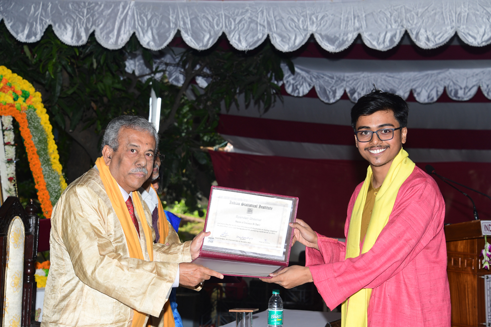

Change-Point Detection
Nonparametric, distance-based methods for detecting abrupt distributional shifts in multivariate and high-dimensional data streams, with provable guarantees.
Indian Statistical Institute · Kolkata
I am Spandan Ghoshal, a doctoral researcher in Statistics at the Indian Statistical Institute, Kolkata. I work on change‑point detection in high‑dimensional data, nonparametric inference and two‑sample testing, and random graph models.

About
I am a doctoral researcher in Statistics at the Indian Statistical Institute, Kolkata, advised by Prof. Anil K. Ghosh. My work develops statistical methods for data whose dimension is large, often far larger than the sample size. A central theme is change‑point detection: finding when the distribution of a high‑dimensional sequence shifts, using distance‑based and graph‑based statistics that make few assumptions about the data. Closely related threads include nonparametric two‑sample testing, high‑dimensional asymptotics, and limit theorems for statistics on random graphs and sampled networks.
Before the PhD, I completed my M.Stat (Computational Statistics) at ISI Kolkata and a B.Sc. in Statistics at Presidency University, Kolkata.
Beyond research, I practise Indian classical flute and harmonica, and draw quiet inspiration from Vedic philosophical traditions that shape both my outlook on research and daily life. I write about these intersections on my blog.
Research
My work sits at the interface of high-dimensional theory and data-driven methodology, where rigorous mathematics serves practical inference.
Nonparametric, distance-based methods for detecting abrupt distributional shifts in multivariate and high-dimensional data streams, with provable guarantees.
Distance-based and graph-based tests for comparing multivariate distributions, with exact or permutation calibration and consistency in high dimensions.
Inference when the dimension grows with, or far exceeds, the sample size: asymptotic behaviour of distance-based statistics and HDLSS regimes.
Limit theorems for subgraph and edge statistics in random graphs and sampled networks, with applications to motif estimation and graph-based tests.
Writing
On High-Dimensional Change-Point Detection Based on Pairwise Distances
Under major revision, Statistica Sinica
Third and Fourth Moment Phenomena for Monochromatic Edges and Applications to Graph-Based Two-Sample Tests
Preprint, October 2026
News
Basu-Bahadur Memorial Conference, ISI Kolkata
December 18 to 22, 2026 · Presenting
Program on Selective Inference, Indian School of Business, Hyderabad
November 2 to 6, 2026 · Selected participant
European Meeting of Statisticians, Lugano, Switzerland
August 2026 · Contributed talk
I am always glad to discuss research ideas, collaborations, or a good rāga. The quickest way to reach me is by email.
Write to me →